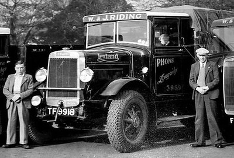

Efficiency
Optimization
Using less energy with equal results
- There is no way around it: production requires energy.
- Humans need, enjoy or indifferently make produce


However:

So, we can:
- Improve our mode of travel
- Change our mode of travel
Besides travel we could improve efficiency across many sectors: factories, administration, internet, crypto mining and more.
Generation Earth